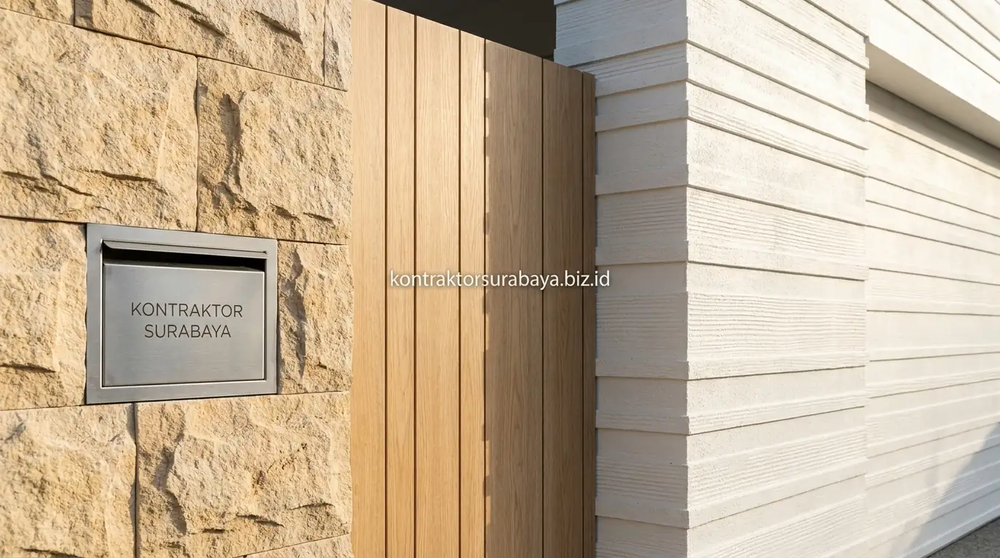

Lahan berlebar 6 meter adalah kondisi umum pada kavling perumahan modern di kawasan padat Surabaya seperti Rungkut, Mulyorejo, Sukolilo, Wiyung, hingga Sambikerep. Banyak pemilik rumah menghadapi tantangan arsitektural saat merencanakan tampak depan agar hunian tidak tampak sempit, terhimpit, atau seperti 'lorong vertikal'. Perancangan fasad yang tepat mampu menyulap kavling 6x12 atau 6x15 meter menjadi hunian megah, proporsional, dan tetap sejuk di tengah cuaca pesisir tropis.
1. Trik Desain agar Fasad Rumah Lebar 6 Meter Terlihat Lebih Luas
Kesan luas pada fasad sempit umumnya dibentuk melalui garis horizontal yang menarik pandangan ke samping, bukan ke atas. Penggunaan kanopi tipis memanjang, list dinding horizontal, atau pagar rendah dengan garis lurus dapat membantu menyamarkan batas lahan.
Selain itu, jendela lebar dengan kusen minim juga membuat fasad terasa lebih terbuka dibanding banyak bukaan kecil yang terpisah-pisah. Menyatukan bukaan kaca lantai satu dan lantai dua dalam satu frame vertikal-horizontal geometris menciptakan ilusi visual bidang depan yang menyatu dan kokoh.
2. Pilihan Gaya Fasad Minimalis yang Cocok untuk Rumah Sempit
Beberapa gaya fasad berikut umumnya lebih mudah diterapkan pada lahan sempit karena elemen desainnya tidak memerlukan banyak ruang tambahan di sisi kiri-kanan bangunan:
- Minimalis Monokrom: Mengandalkan permainan warna netral seperti putih, abu, dan aksen hitam pada bidang datar tanpa lekukan rumit.
- Tropical Minimalis: Memadukan aksen kisi-kisi kayu/WPC, tanaman hias gantung, dan bukaan roster udara untuk kesan asri dan sejuk.
- Industrial Minimalis: Menonjolkan tekstur acian semen ekspos, bata roster terakota, dan elemen besi hollow hitam pada kanopi carport.
- Skandinavia Minimalis: Memakai warna pastel terang dengan aksen kayu natural pada pintu utama dan tritisan atap pelana miring.

3. Bagaimana Menentukan Gaya Fasad Sesuai Orientasi Rumah?
Rumah yang menghadap barat umumnya membutuhkan perlindungan tambahan dari panas sore berupa kanopi lebar atau secondary skin pada bukaan jendela.
Sebaliknya, rumah dengan orientasi utara-selatan relatif lebih aman menggunakan jendela kaca berukuran besar karena paparan panas langsungnya lebih rendah. Analisis arah hadap ini selalu dilakukan oleh tim arsitek di tahap awal desain sebelum gambar kerja fasad difinalisasi, memastikan penghuni tidak tersiksa oleh hawa panas menyengat di dalam ruangan.
4. Material Fasad yang Direkomendasikan untuk Rumah Berlahan Terbatas
Pemilihan material pada lahan sempit perlu mempertimbangkan bobot visual agar fasad tidak terkesan berat sebelah atau terlalu ramai tekstur:
- Batu Alam Paras Jogja / Andesit Alur: Diterapkan pada satu bidang kolom utama sebagai focal point aksen tanpa mendominasi seluruh dinding.
- Cat Eksterior Weathershield 2 Tone: Membagi proporsi fasad lantai 1 dan 2 secara elegan serta melindungi dinding dari jamur hujan tropis.
- Panel Wood-Plastic Composite (WPC): Alternatif ringan bermotif urat kayu jati yang anti rayap, tidak lapuk, dan minim perawatan.
- Panel Roster Beton Minimalis: Menambah tekstur estetis sekaligus berfungsi sebagai sirkulasi udara alami carport dan teras.
5. Solusi Void Tengah untuk Sirkulasi Udara pada Rumah Dua Lantai Sempit
Rumah dua lantai di lahan lebar 6 meter sering mengandalkan void tengah yang dipadukan dengan tangga terbuka untuk menjaga sirkulasi udara dan cahaya alami tetap masuk hingga ke ruang tengah.
Desain ini membantu mengurangi kebutuhan pencahayaan buatan dan pendingin AC pada siang hari, sekaligus memberi kesan ruang yang tidak sumpek meski lebar kavling terbatas. Posisi void biasanya diletakkan berdekatan dengan ruang keluarga atau tangga utama agar tercipta efek cross ventilation vertikal yang mengalirkan udara panas keluar melalui ventilasi atap.
6. Kesalahan Umum dalam Mendesain Fasad Rumah Sempit
Beberapa kesalahan yang sering ditemui pada proyek fasad rumah berlahan sempit antara lain:
- Memasang Terlalu Banyak Variasi Material: Menggabungkan keramik motif, batu alam, kayu, dan kaca bertekstur sekaligus membuat fasad tampak sempit dan berantakan.
- Kanopi Carport Terlalu Pendek: Tidak mampu melindungi tampias hujan deras Surabaya sehingga pintu utama dan dinding bawah cepat kusam.
- Memilih Warna Cat Terlalu Gelap: Warna gelap menyerap panas matahari secara masif dan mempertegas sempitnya bidang fasad.
- Mengabaikan Jalur Talang Air Hujan: Talang air pipa terbuka yang melintang di depan fasad merusak nilai estetika tampak depan rumah.
"Fasad rumah berlebar 6 meter yang sukses bertumpu pada kesederhanaan proporsi geometris, bukaan kaca yang lapang, dan ketelitian pemilihan material anti panas."
Konsultasi dengan arsitek sejak tahap awal membantu menghindari kesalahan desain sebelum masuk ke tahap konstruksi fisik. Pelajari portofolio desain kami pada galeri proyek kami, atau pelajari cakupan lengkap perencanaan pada halaman jasa arsitek rumah Surabaya.